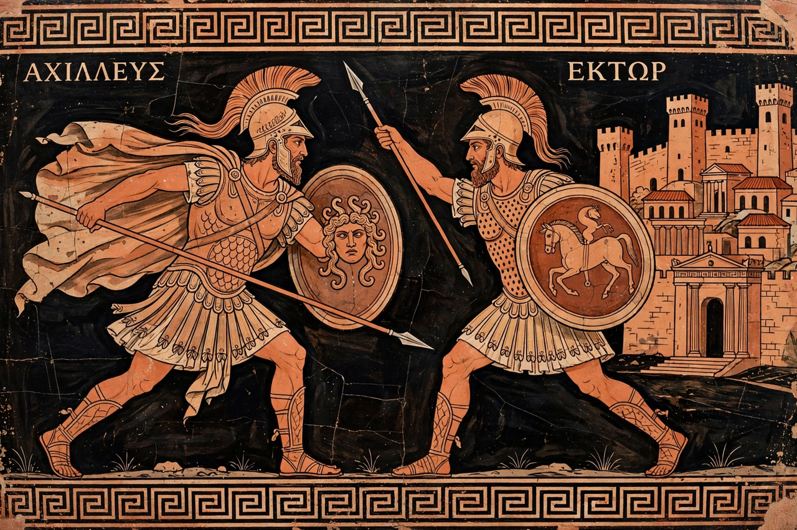

| Author | Attributed to Homer |
|---|---|
| Language | Homeric Greek |
| Composed | c. 8th century BC |
| Length | 15,693 lines in 24 books |
| Subject | The wrath of Achilles during the Trojan War |
The Iliad is one of two major ancient Greek epic poems attributed to Homer. Set during the Trojan War, the ten-year siege of the city of Troy (Ilium) by a coalition of Mycenaean Greek states, it tells the story of the quarrel between King Agamemnon and the warrior Achilles, which takes place during a few weeks in the final year of the war. It is one of the oldest extant works of Western literature, generally dated to the 8th century BC, and is written in Homeric Greek in dactylic hexameter.
The poem opens with the poet invoking the Muse to sing of the wrath of Achilles. Agamemnon, forced to return his captive Chryseis, seizes Achilles' war-prize Briseis; Achilles withdraws from the fighting and persuades his mother Thetis to have Zeus favour the Trojans so the Greeks learn his worth. Greek fortunes collapse. An embassy fails to reconcile Achilles, who relents only enough to lend his armour to his beloved companion Patroclus. Patroclus routs the Trojans but is killed by Hector, prince of Troy, with Apollo's aid.
Maddened by grief, Achilles returns to battle in new armour forged by Hephaestus, and in a duel before the walls kills Hector, then drags the body behind his chariot. The poem ends not with Troy's fall but with an act of shared humanity: the aged King Priam comes secretly by night to ransom his son's body, and Achilles, moved, returns it; Troy mourns Hector with funeral rites in the closing lines.
The Iliad explores honour (timē), glory (kleos), fate, mortality and the pity of war. Its style — formulaic epithets ("swift-footed Achilles"), type-scenes, the Catalogue of Ships in Book 2, and extended similes drawn from peacetime life — reflects an oral-formulaic tradition, as demonstrated by Milman Parry and Albert Lord in the twentieth century. The gods participate directly in events, debating on Olympus and intervening on the battlefield.
The poem was standardised in Hellenistic Alexandria, where scholars divided it into 24 books. It was the foundation of Greek education, imitated by Virgil in the Aeneid, and has never been out of circulation; notable English translations include those of Chapman, Pope, Lattimore, Fagles, Emily Wilson and others. Its sequel in narrative, though not in composition date, is the Odyssey.